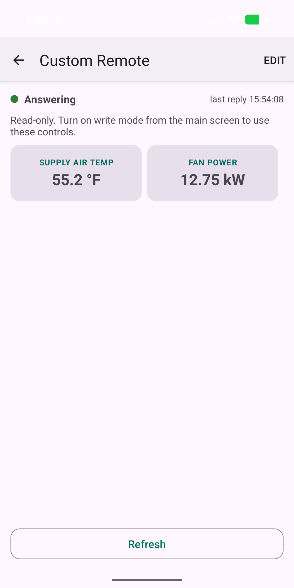

How do I build a custom remote for a Modbus device in Easy Modbus?
Updated 30 September 2026
Open a device, tap the ⋮ menu and choose Custom Remote. Tap Edit, then Add Control, pick one of the device's saved readings (or enter an address by hand), and choose the kind of control — Readout, Setpoint, Toggle, Button, Multi-state or Put back. Drag tiles to arrange them, tap a tile to rename, resize or recolour it, then tap Done. The remote reads live values; controls that write work only while Write mode is on. The free version keeps one remote; a one-time unlock gives unlimited remotes and removes the optional ad shown when you open one.
Before you start
- Add the device (Find Devices or Add by IP Address) and check it answers — device ⋮ menu → Test connection.
- Save the readings you want on the remote. A control is built from one of the device's saved readings, so it inherits the reading's data type, word order, multiplier, units, named states and write limits. Add them first with Add a Reading (see how to use Easy Modbus), or use Enter an address by hand while building, which runs the same add-a-reading wizard.
Step 1 — Open the remote
Tap the device in your list, open its ⋮ menu and choose Custom Remote. A new remote opens empty: “No controls yet. Tap Edit, then Add Control.” Tap Edit at the top right. Nothing is sent to the device while you are in Edit mode.
Step 2 — Add controls
Tap Add Control, then either Pick from this device’s readings or Enter an address by hand. Choose the reading, then the control type — each row shows a small picture of the control:
| Control | What it does | Use it for |
|---|---|---|
| Readout | Shows the live value. Never writes. | Leaving water temp, kW, a status word. |
| Setpoint | Minus, value, plus. Tap the value to type one. | A setpoint or speed reference. |
| Toggle | Tap to flip between the off and on values. | A coil: run enable, remote start. |
| Button | Writes one fixed value, after a confirmation. | A reset, a fixed mode. |
| Multi-state | Tap to pick from named states. | Off/Hand/Auto, a mode register. |
| Put back | Rewrites the value the register held the first time the app read it this session. | Put one beside every control that writes. |
Each new control drops into the first free space on the four-column grid.
Step 3 — Arrange and configure
- Drag a tile to move it. It snaps to the grid and will not land on another tile — a drop on an occupied spot snaps back.
- Tap a tile for its options: Rename control,
Width (setpoints and multi-state are at least two cells wide), Step
size (setpoints), Value to send (buttons), State names
(multi-state and toggles, one per line as
value=name, e.g.0=Off), Value limits, Colour, Card style, Toggle large value text and Delete control. - Use Value limits to narrow what this remote may write — it can be tighter than the reading's own limits, which still apply.
- ⋮ menu → Rename remote gives it a name; Delete remote removes it from the phone (nothing on the equipment changes).

Give the control that stops the pump a red, bold card and leave the temperature readouts plain. With gloves on, at arm's length, colour is what you see first.
Step 4 — Use it
Tap Done. The remote reads every control in as few Modbus requests as the device allows. The status line says Answering with the time of the last reply, Some readings not answering, or No response from device — and values that did not come back are dimmed instead of looking current. Refresh reads them all again.
Controls that write need Write mode on (main screen ⋮ menu → Write mode); until then the remote says it is read-only. A toggle or setpoint will not write until a value has been read, so a timed-out read can never switch something on by accident. Every write is read back and recorded in the Session write log. See how to write to a Modbus register, including why Put back matters.
Free version, unlock, and where remotes live
- The free version keeps one custom remote. Opening it asks whether you want to watch a short rewarded ad; if no ad is available (no signal, for example) it just opens.
- The one-time unlock (Remove ads & unlimited remotes) removes the ads and lets you build a remote for every device. Remotes never expire.
- Remotes are stored on the phone only, under the device they belong to, and are excluded from cloud backup. Deleting a device deletes its remote.
- Need one screen for several devices? Use the Control Panel Builder.